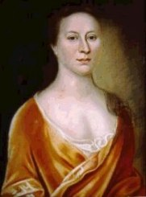

Anna Cuyler Van Schaick
Anna Cuyler was born in Albany in November 1685, the first of the twelve children of Johannes and Elsie Ten Broeck Cuyler. Her father was a prominent merchant and one-time mayor of Albany. Her mother was the daughter of one of the founders of the city of Albany. She grew up in a large family in the second ward home of a wealthy businessman and officeholder. She would have been among the six daughters and two sons listed in the will written by her father in 1736. Her brother would become mayor of Albany in 1742.
While most early Albany marriages involved brides in their early twenties, in 1712 twenty-seven-year-old Anna married thirty-year-old widower Anthony Van Schaick, Jr. He was a son of a farming-based, early Albany business family. Over the next fourteen years, Anna gave birth to at least nine of the previously childless Van Schaick's children - the last arriving as she passed her forty-first birthday.
The couple set up housekeeping in Albany's first ward. By the 1720s, they had moved across State Street and were living in a house next to that of her parents on the east side of Pearl Street. A decade later, Anthony Van Schaick, Jr. inherited his father's estate on an island in the Hudson ten miles north of Albany. Like many affluent Albany business families of that time, Anna's family enjoyed both city and countryside residences.
The handsome, pastel portrait shown here is said to have been the work of the twice-widowed American artist Henrietta Dering Johnston during the 1720s.
Anna Cuyler Van Schaick died in July 1741 at the age fifty-five and was buried in the Dutch church burial ground. Then in his early sixties, Anthony Van Schaick, Jr. was left to raise their large family until his passing in 1759.
Portrait by Henrietta Johnston (1674-1729) dated about 1725. Collection of the New York State Museum and on display in the Museum's New York Hall. Another portrait of this affluent wife and mother woman may have been painted by a regional limner.